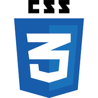
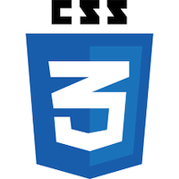

About
Me
 

Hello! I'm Hyunsu, a software developer based in New York, NY who
enjoys using obsessive attention to detail and passion for modern
javascript frameworks/libraries. As a front end developer, my
philosophy is to make it the best experience possible while also
using efficient modern backend.
I tried many things before I became fascinated by code! I spent
most of my teen years as a 400 Meters athlete and Aikido(martial
art) player. I won second place in the nationwide, and I had
worked as a ski instructor. I started out studying Physical
Education at Konkuk University in South Korea but since I have
figured out that I would like to see people get helped by using my
product, then changed track to study Computer system. I feel very
lucky to have been living in such a diverse environment, and I
enjoy observing the similarities and differences between various
cultures.
What's more?
New York College Of Technology
Jan 2019
bachelor degree in computer system
I enjoyed the opportunity to learn and found it a great privilege to be able to pursue my interests. My four years of college life pushed me to expand, challenge and explore what I love to do. I also found out a lot about myself, some good, some weakness. Attending software development core courses such as object-oriented programming, discrete mathematics, and web programming gave me the theoretical knowledge and practical skills to utilize for the next step.
Technical Support Intern
Aug 2017 - Aug 2018
New York City Department Of Education(Newcomers high school)
During a year, I maintained computer systems and network troubleshoot system and network problems.I wrote procedural documentation and relevant reports. I also trained instruction of app for AP test to teachers and students. Besides technical responsibilities, working as technical suuport intern improves effective communication skills, task and time management, and thinking and delivering the best approach to solve a problem.
Constant leaner
I'm constantly reading and learning latest web technologies and approaches; but the best way to learn is by doing and repeating. I am currently working on react project using my own solid css skill. I am excited to build implementing Bitcoin API.
Sports
When not building products, I like to play sports such as indoor-rock climbing, bowling, and workout at jym. I love the mental and physical health benefits of exercising. After sitting at a computer long time, getting in the gym is perfect way to fresh my focus.
Programming Experience
A representation of my programming experience